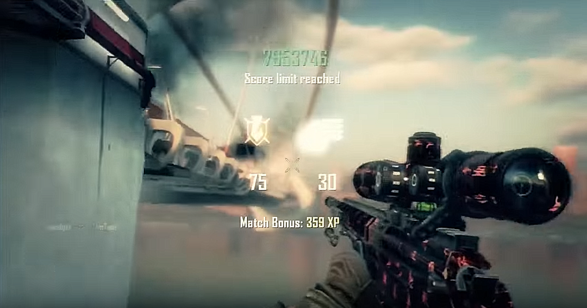

2013-2015. Expanding on Greatness.
2014 - More of the Same
In 2014 there was a new breed of trickshoters, a lot of the Modern Warfare 2 trickshoters had quit and Black Ops 2 had advanced to the point where every trickshot that could be hit, was being hit. This year balanced high technical standards with hitting trickshots consistently. Meanwhile on the YouTube side, many of the FaZe Clan members had reached 1 million subscribers. The FaZe Clan Official YouTube channel reached 3 million subscribers. Black Ops 2 although no longer fresh, was still viable and fun and trickshoters continued to play and enjoy the game with massive growth coming from the fans.

2015 - The Beginning of the End
2015 was the 3rd year on Black Ops 2 and the 6th of Modern Warfare 2. Although some people were still trickshoting on other games like Call of Duty MW3 and Call of Duty Ghosts, there were no great games being released.This made trickshoting pretty stale so teams like FaZe used their platform for lifestyle videos and a small amount of trickshoting videos compared to 2014. This created a divide, the hardcore trickshoting fans and the fans of the individual FaZe members. When the community split during 2015, this instantly made trickshoting take a dip in viewership and popularity, a lot of the older pioneers who hadn't started making lifestyle content began to quit the scene all together. Trickshoting was still big, but on the decline.